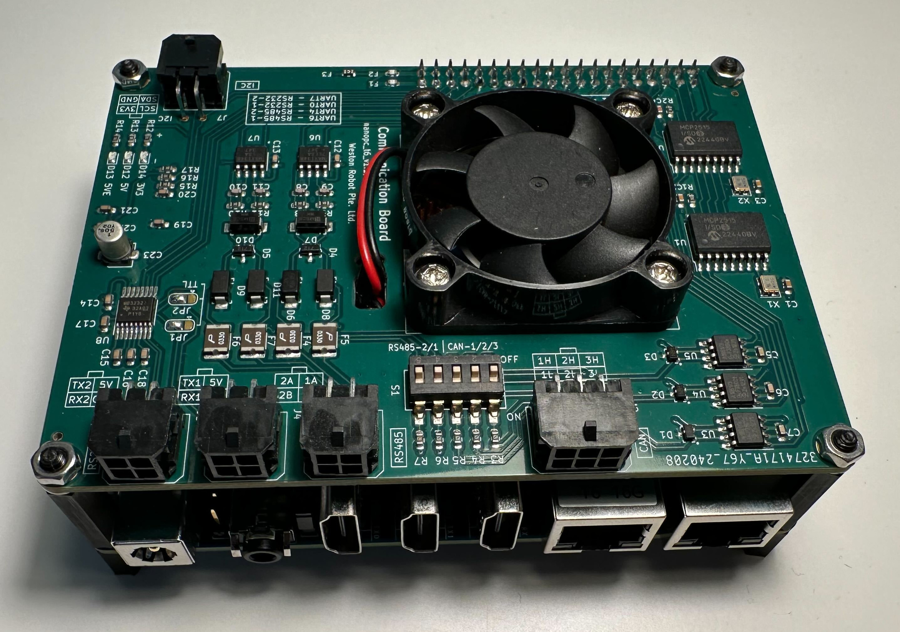
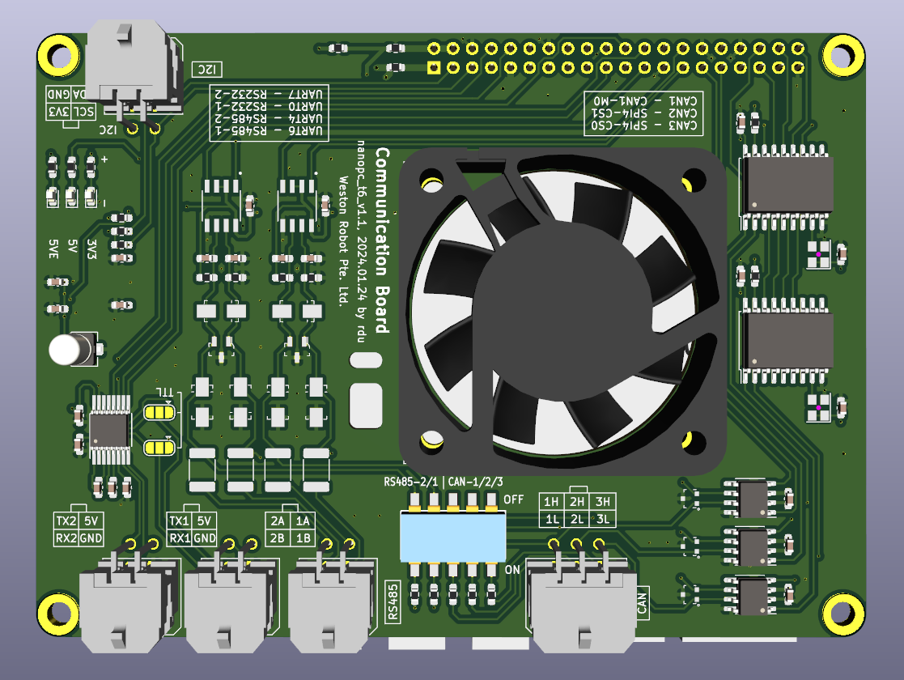

NanoPC-based Onboard Computer
Revision History
Revision |
Date (DD/MM/YYYY) |
Author |
Changes |
|---|---|---|---|
1 |
18/4/2024 |
Ruixiang Du |
Initial release |
2 |
16/5/2024 |
Ruixiang Du |
Added information about the RS232-2 port reconfiguration |
This onboard computer is based on NanoPC-T6. We extended the board with industrial ports for easy and reliable interfacing with commonly used sensors and robot bases. Drivers to the ports are pre-configured under Ubuntu 22.04.
{kind=link}

Key Specifications
SoC: Rockchip RK3588
RAM: 64-bit 8GB/16GB LPDDR4X at 2133MHz
Storage: 128GB/256GB eMMC
MicroSD: support up to SDR104 mode (microSD card not included)
Ethernet: 2x PCIe 2.5G Ethernet
USB-A: 1x USB 3.0 Type-A
USB-C: 1x Full function USB Type‑C port, support DP display up to 4Kp60, USB 3.0
Video: 1x Standard HDMI input port, up to 4Kp60, 2x Standard HDMI output ports
Audio 1x 3.5mm jack for stereo headphone output, 1x 2.0mm PH-2A connector for analog microphone input
- Industrial ports
3x CAN interfaces (with transceivers)
2x RS485 interfaces
2x RS232 interfaces
Active Cooling: 1x 5V Fan
Power supply: 5.5*2.1mm DC Jack, 5V~20V, 12V is recommended.
Ambient Operating Temperature: 0℃ to 70℃
OS: Ubuntu 22.04 (Linux kernel 5.10)
You can find more information about the NanoPC-T6 base board (not including the extensions made by Weston Robot) from its official wiki page.
Industrial Ports
{kind=link}

You can follow the silk screen on the board to connect your devices to the industrial ports.
The RS232 and RS485 ports can be access at:
RS232-1:
/dev/ttyS0RS232-2:
/dev/ttyS7RS485-1:
/dev/ttyS6RS485-2:
/dev/ttyS4
Note
The RS232-2 port can be configured as a TTL UART port by re-configure the jumper solder pads (JP1 and JP2). If you bridge the pad in the middle and the side marked as “TTL”, the port will be configured as a TTL UART port. If you bridge the pad in the middle and the other side, the port will be configured as an RS232 port. Both TTL and RS232 UART port is accessed at /dev/ttyS7.If no bridge is made, the port only provides power and no signal is transmitted.
You need to bring up the CAN interfaces before you can access them. Here is an example to bring up the CAN0 interface (you may adjust the bitrate according to your CAN devices):
$ sudo ip link set can0 up type can bitrate 500000
$ sudo ip link set can0 txqueuelen 1000
You can also add the following configuration to /etc/network/interfaces to make the CAN interface persistent:
auto can0
iface can0 inet manual
pre-up /sbin/ip link set can0 type can bitrate 500000
up /sbin/ifconfig can0 up
post-up /sbin/ip link set can0 txqueuelen 10000
down /sbin/ifconfig can0 down
auto can1
iface can1 inet manual
pre-up /sbin/ip link set can1 type can bitrate 500000
up /sbin/ifconfig can1 up
post-up /sbin/ip link set can1 txqueuelen 10000
down /sbin/ifconfig can1 down
auto can2
iface can2 inet manual
pre-up /sbin/ip link set can2 type can bitrate 500000
up /sbin/ifconfig can2 up
post-up /sbin/ip link set can2 txqueuelen 10000
down /sbin/ifconfig can2 down
Note
You may toggle the dip switches to enable the termination resistors for the CAN and RS485 interfaces. The termination resistors are disabled by default.
Warning
Please note that the 5V output is limited by a resettable fuse rated at 300mA. So please make sure the total current consumption of all devices connected to the 5V outputs does not exceed 300mA.